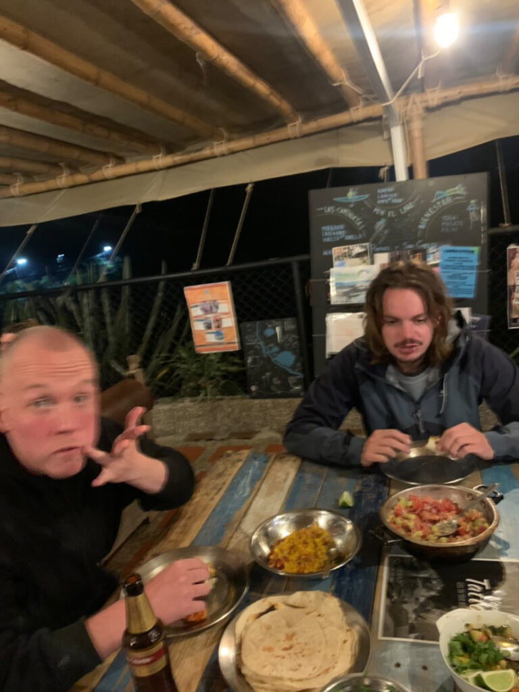
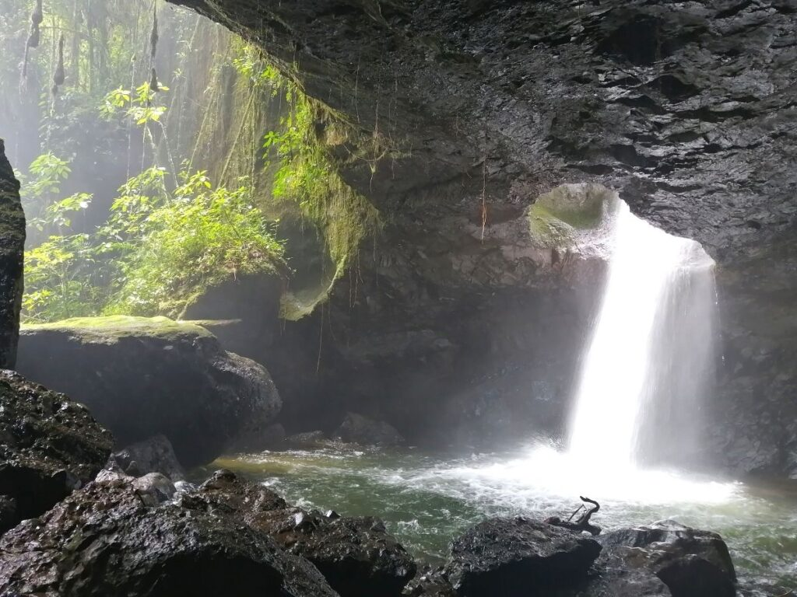
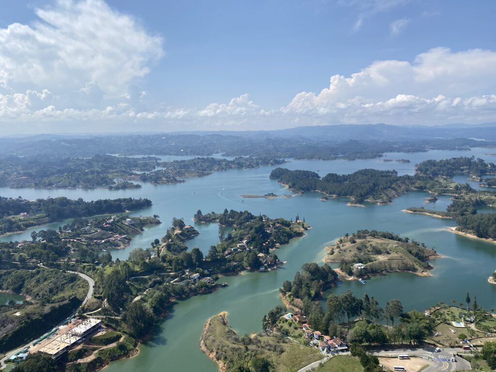

Soms valt er weinig te vertellen en dat is goed. Er gaan hele dagen voorbij zonder dat ik aan Nederland, verloren liefdes, oude gewoontes of aan deze blog denk. Een leven in het moment is een leven zonder veel wensen. Zolang je maar op de juiste plek bent met de juiste mensen. Het cliché is waar.
Als een doorgewinterd trio trekken we vanuit Medellín de binnenlanden van de Andes in. De reistijden vallen altijd tegen, maar in de vertrouwde bergwegen ontploft deze keer de remvloeistof, wat de vertraging in de kaart speelt. In de bloedhitte wachten we op de weg waar mensen zich poedelnaakt wassen in geulen met hopelijk schoon bergwater. We arriveren in Jardín met het idee een paar dagen te blijven, maar de eerste aanblik van het dorpje wekt al een verslavende, serene rust op na de chaos van Medellín. Een prachtige kerk manifesteert zich op een levendig dorpsplein, terend op een zorgeloze energie. Binnen een uurtje loop je door alle omliggende kleurige straatjes met koloniale huizen. Aan de rand ligt zelfs een betonnen stadionnetje, waar we inbreken namens de romantiek van het voetbal.
De reden dat we een week blijven, is het hostel op een half uur lopen van het dorpje. Met een grote groene tuin, hobbitachtige huisjes en twee zwemrivieren die elkaar kruizen, kun je niet anders dan ontspannen op deze plek van Abuela (oma). De goedlachse Venezeluaanse kookt de lekkerste maaltijden die ik op dit continent heb gegeten en dwingt me de hele dag geduldig om mijn Spaans op te krikken. Van haar man verlies ik dagelijks schaakpartijen met grootmeesterachtige trekken. Het hostel draait op reizende vrijwilligers die ook veel langer blijven hangen dan van tevoren gedacht. Dagenlang doen we niet veel meer dan uitslapen, zwemmen, pingpongen, filosoferen, bedwelmd raken en luisteren naar de krekels, vogels en de waterval. Hooguit lopen we naar het ijskoude water van de rivier omringd door rotsen en groene, steile rotswanden.
Tevredenheid overheerst het griepje dat in het hostel ronddwaalt en is een reden om alle schijnbaar mooie hikes links te laten liggen. De kamers vullen zich s’ avonds met vuurvliegjes en maken het nachtlampje overbodig. De ochtend start met het nieuwsgierige gekwetter van een kolibrie in het raamkozijn of de keiharde donderslagen die bijna elke dag terugkomen en de felle zon verdrijven. Volle regenbuien voeden de groene bodem en trekken massaal de fleecetruien uit de tassen. Het weekend leent zich voor voedsel van de kraampjes op het plein ter voorbereiding van pool- en salsa-avondjes in het gemoedelijke centrum. En dan is de week schijnbaar al voorbij. We zitten voor altijd in el corazón van Abuela, die ons niet laat vertrekken uit het door tuktuks gedomineerde dorp zonder een uitgebreide photoshoot.


Een volgend station rondom Medellín is Guatapé. De bus stopt elke kilometer, waarna verkopers of reizigers naar binnen en buiten sprinten alsof hun leven er vanaf hangt. We arriveren in een onaardse omgeving van miljoenen eilandjes rondom een klein dorpje. Het is wederom het hostel dat het verblijf een extra dimensie geeft. Even het dorp uitlopen en het glooiende groene landschap onderwerpt zich aan onze wensen. De grote attractie is een gigantische rots die de omgeving domineert en beklommen kan worden in 700 traptredes. Het magnifieke uitzicht is er een voor de eeuwigheid.

Een overwachts feestje in het hostel blijkt zeer gaande en eindigt nooit. De in grote aantallen vertegenwoordige hippies laten hun dreadlocks zwieren en de DJ bevrijdt ons van de eeuwige raggaeton, terwijl de nacht en de dag zich met elkaar versmelten.